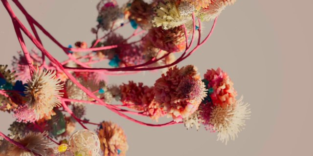
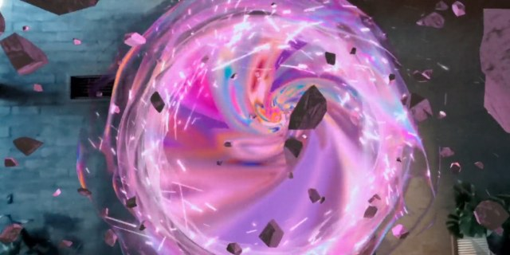
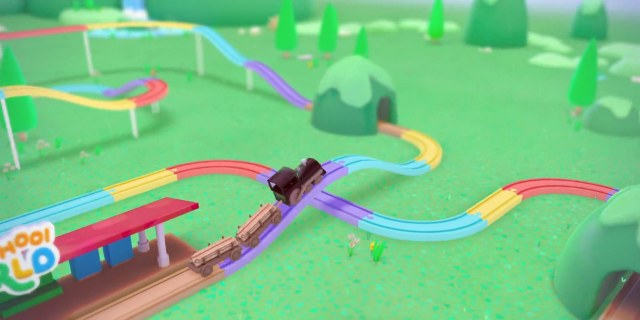
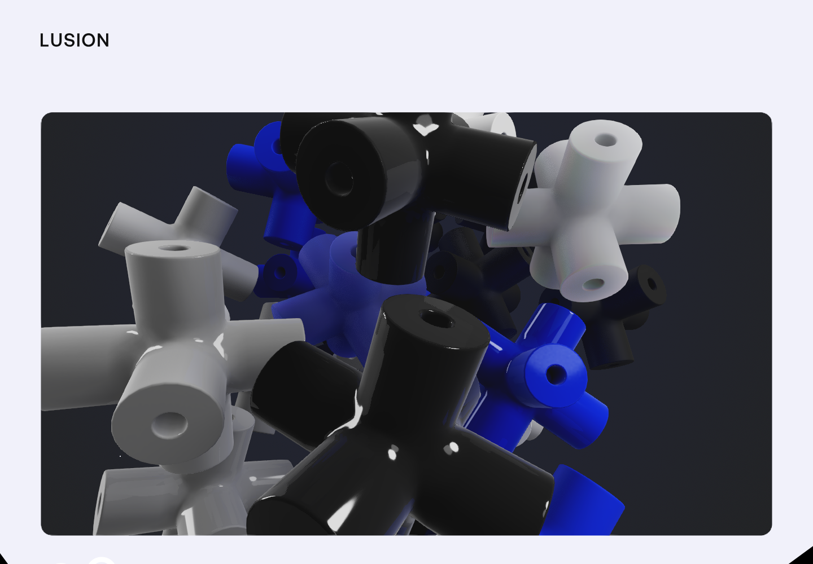

Responsive grid
12 → 6 COLUMNS010203040506070809101112
12열 · gap 2vw · 좌우 max(5vw, 40px)
812px 이하: 6열 / gap 4vw / padding 25px
400px 이하: padding 15px
공식 내부 가이드가 아닌 공개 자료 기반 참조 시스템입니다. 원본에서 확인한 사실과 새 제작 제안을 구분해 기록했습니다.
화면 너머의 디자인을,
다시 사용할 수 있는 언어로.
Lusion의 공개 코드와 화면에서 추출한 디자인 토큰, 미디어 구조, 그리고 독자 제작을 위한 가이드.
HTML·CSS·JavaScript부터 셰이더·이미지·영상·폰트·3D 데이터까지. 출처별로 검색하고 코드와 미리보기를 확인하세요.
소스 검색 · 미리보기 · 다운로드 ↗ 02 / RECONSTRUCTION STUDIO포인터 흔적·입자 변형·유리 파편·스프링 반응을 조작하고 분석 근거와 대체 구현 코드를 함께 살펴보세요.
대체 구현 실행하기 ↗공개 배포 파일과 번들에서 분리한 코드, 새로 작성한 재구성을 각각 표시합니다. 수집 범위와 누락 감사 ↗
SVG 원형, CSS 기호, 클레이 버튼, 메뉴, 카드와 정보 패널을 상태별로 확인합니다.
컴포넌트 열기 ↗ 02 / MOTION LAB3D·깊이·충격·터널·타이포·전환을 조작하고 재현 코드의 동작 원리를 확인합니다.
모션 실험하기 ↗ 03 / FRAME STUDY


시간대별 장면과 예상 제작 방식을 대조하고 해당 프레임 위치에서 원본을 재생합니다.
분석과 원본 비교 ↗공개 코드에서 추출한 요소와 관측 기반으로 새로 구현한 요소를 각각 표시했습니다. 복원 예제의 조명·물리·렌더링은 원본 내부 구현과 다를 수 있습니다.

차분한 중성색 위에 선명한 파랑. 스와치를 누르면 HEX 값을 복사합니다.
이름은 원본 CSS 토큰입니다. 프로젝트별 색상과 디버그 색상은 전역 팔레트에서 분리했습니다. 전체 추출 근거 ↗
Aeonik Regular / Medium
IBM Plex Mono / LusionMono
영문은 수집 폰트, 한국어는 시스템 폰트 대체.
각 폰트의 신규 서비스 사용 범위는 별도 확인.
12열 · gap 2vw · 좌우 max(5vw, 40px)
812px 이하: 6열 / gap 4vw / padding 25px
400px 이하: padding 15px
카드 모서리: 데스크톱 20px, 모바일 최종 10px.
버튼은 알약 형태로 분리합니다.
공개 프로젝트 페이지와
로컬 썸네일 아카이브
작품명을 누르면 공식 프로젝트 페이지를 엽니다. 수집 이미지와 프로젝트별 색상은 원본 관측 자료입니다.
모듈 geometry + matcap + body physics. 커서 주변의 힘이 회전과 이동에 연결됩니다.
HomeBalloons / cross.buf컬러 이미지와 깊이 맵을 함께 읽어 카드에 작은 시차와 포커스 이동을 만듭니다.
home.webp + home_depth.webp입력을 render target에 누적하고 blur한 결과를 화면 왜곡 효과에 전달합니다.
ScreenPaint → Distortion원본 공개 릴의 가로·세로 편집본. 자동 로드와 자동 재생 없이, 재생 버튼으로 확인합니다.
미리보기 포스터는 각 릴에서 추출한 실제 프레임입니다. 이 열람기는 원본 JavaScript 번들을 실행하지 않습니다.
아래 문구는 관측한 시각·구현 원리를 독자 제작용으로 새로 작성한 브리프입니다. Lusion의 실제 생성 프롬프트나 내부 제작 문서가 아닙니다.
카메라·재질·검수 기준 전체 보기에셋은 링크를 선택할 때 엽니다. .buf 파일은 배포용 데이터로, 편집 가능한 원본 3D 씬과 구분합니다.
진행률로 프레임의 크기와 모서리를 함께 제어합니다. 원본의 WebGL 표면 변형을 DOM 보간으로 단순화했습니다.
원본 EndSection의 문자 교체와 말미 강조를 수동 재생으로 구성했습니다. 문구·타이밍은 이 예제의 제안입니다.
LET’S CREATE.
EndSection / #end-section-title-link / ROLLUP_ANIMATION_INTERVAL제스처를 켠 영역 안에서만 휠 또는 방향키가 게이지를 채웁니다. 터치는 +25% 버튼, 키보드는 Tab·방향키·Escape. 실제 페이지를 강제로 이동하지 않는 상태 재현입니다.
ScrollNavSection / #scroll-nav-next-bar-inner / overScrollRatio